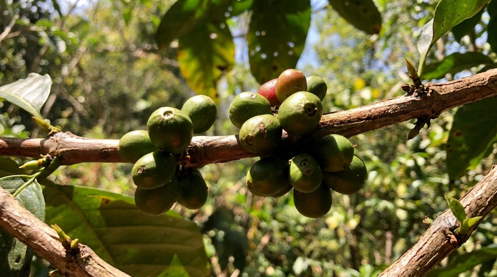
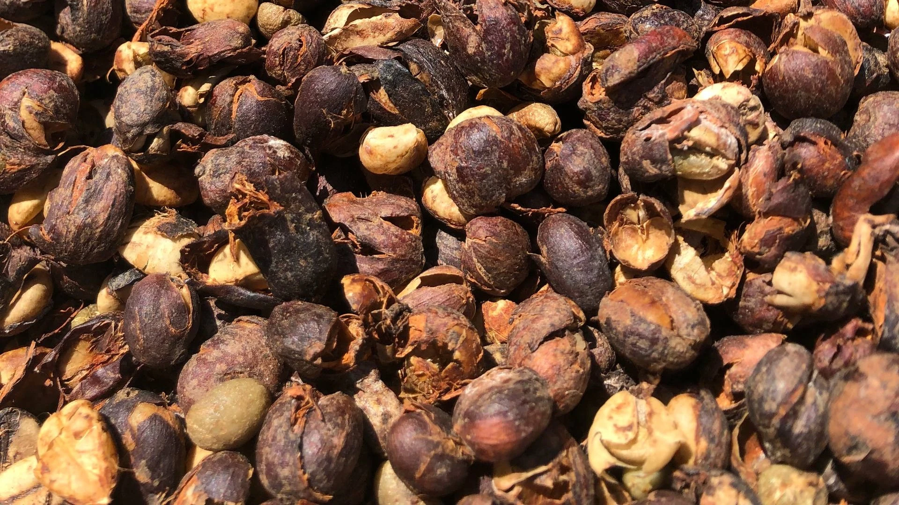

Dari Tanah Bawakaraeng,
Untuk Pecinta Kopi

BUMBA BEANS lahir pada tahun 2019 sebagai bentuk penghargaan terhadap kekayaan alam pegunungan dan para petani kopi di kawasan Gunung Bawakaraeng, Sulawesi.
Kopi BUMBA BEANS tumbuh di tanah lereng gunung yang subur dengan udara dataran tinggi yang sejuk. Biji kopi kami berasal dari Bulukumba Barat, Sulawesi Selatan, dengan ketinggian sekitar 1200–1600 mdpl.
Dijaga Dengan Ketelitian

Kopi dipetik secara selektif oleh tangan petani lokal dengan penuh ketelitian untuk menjaga kualitas terbaik dari setiap biji ceri kopi. Proses dan pengolahan dilakukan dengan standar kualitas tinggi untuk hasil terbaik demi menjaga cita rasa hasil panen.
Kopi dari BUMBA BEANS

BUMBA BEANS menghadirkan tiga varietas kopi: Arabica, Robusta, dan Liberica, yang diproses dengan pilihan Natural, Washed, Honey Process, dan Fermentasi. Setiap biji kopi kami pilih dengan karakter rasa yang berbeda untuk memberikan pengalaman menikmati kopi yang beragam.